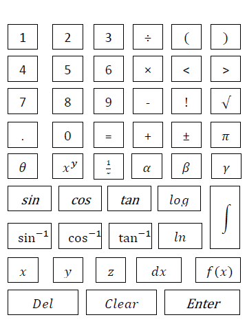

SIT708 - Mobile Systems Development
Assignment 01
Project Plan
Tharini Hasara Manawadu De Silva
SID: 217336638
Marking Justification
Critical Information Summery
Mark Aimed for (%): 90%
Criteria: Presentation [HD]
- Document has rich presentation of the content using graphs, tables and separated in to sections like a professional document.
- Document has consistent colours using colour Hex decimal theory.
- Uses styles for all main formatting like text formatting, table formatting, div.
- Have consistent styling throughout the document.
- Grammar and spell checked HTML document.
Criteria: Rich text [HD]
- Document uses padding and margins for maximize the clarity.
- Document uses tables, bullet points, lists, images and sketches for maximize the clarity.
Criteria: Explanation [HD]
- Uses simple language which is comfortable and engaging to read from a layperson, technical programmer and non-IT-background person.
- Cover each and every details.
Criteria: Competitor Analysis [HD]
- Document contains a competitor analysis against 10 competitors highlighting their major features and failures.
- Summarized customer feedback section for each competitor.
Criteria: Features [HD]
- Document shows 13 project features which are unique for the application.
- Each feature have detailed description of how it operates with compared to competitors.
- Uses sketches for further explanations.
Criteria: Milestones [HD]
- Documented all the milestone with estimated man hours and actual man hours.
- Each milestone separated into several tasks.
- Milestones are identified under two main releases.
Criteria: Design [HD]
- Documented all the interfaces with colour themes.
- Listed all the common user actions for each wireframe.
- Listed all the navigation patterns between wireframes.
Criteria: Data [HD]
- Listed all the user variable with the variable type.
- Documented evey database table with data types and examples.
Criteria: API [HD]
- Explained every function briefly with the pseudo-code and comments.
- Explained each function about how it works.
- Documented example for function/method calling.
1. Overview
PiyoX is a mobile gaming application that allows high school student to enhance their knowledge in mathematic stream. Most of the time high school students are struggling with the advanced mathematics. PiyoX can help to get-rid of these mathematic struggles and to be a proficient in mathematics. This mobile game help user with four key areas of mathematics,
- Algebraic Expression
- Trigonometry
- Differentiation
- Integration
User can select key area of the mathematical problem by selecting the above given areas from the app. Then user can enter the question through question prompt by a specific keyboard to the application. According to the entered question by user, the application generates four answers. Then user should select the correct answer among those answers. Then after the system evaluates user's answer and will add marks. Then user can see the step by step answer for the given question whether the answer is correct or not.
2. Background
Having a better knowledge in advanced mathematic leads to many career opportunities. On the other hand mathematics has become a subject that worth to study because of its elegance. Learn mathematics while challenging at times bring an enormous feeling of accomplishment. So students trend to learn advanced mathematics from their schools. Therefore they always try to refer additional books, e-learning methods etc. in order to gain additional knowledge.
With the immerging technology, calculators, mobile applications, software and other online resources are directly impact on the education process in all sectors. Nowadays students are tend to equip with online learning tools and digital devices. Many high school students can carry their mobile phones to school, use family desktop computer and have access to electronic devices from school. While majority of the school students are already practised the technology-empowered classrooms, teachers also continue to integrate technology-enabled materials in their teaching style too.
Current educational system in the world highly recommends students to study mathematics in all stages in the school. There are calculators, number of software such as MATLAB, Microsoft Mathematics etc. and mobile applications to solve advanced mathematical problems. Sometimes these tools only give the final answer to the student. If the answer is wrong, there is no way for student to find out where he or she has done the mistake. Sometimes, even students have enough knowledge, they couldn't not apply theoretical knowledge to a real world problem. And also teachers do not have enough time to explain each and every problem in the classroom.
As a solution to the above scenarios, I have decided to develop a system that aims certain problem areas which most of the students have to face in high school mathematics.
3. Competitor Analysis
- Physical Classroom
- Standard based focus on significant skill or concept.
- In order to build new knowledge use prior knowledge and experience.
- Make real world scenarios by cooperative learning.
- Student engagement in activities are high.
- Have a good demand in high order thinking patterns.
- Use student prior knowledge in order to create useful real world applications.
- Create competition among students.
- Can share knowledge with each other.
- Create new knowledge and can share innovative ideas.
- Cost for physical class room is high.
- Time is limited and the amount of knowledge that can give is limited.
- Cannot focus in each and every student.
- Weak student not get any attention.
- PocketCAS Mathematics Toolkit
- 2D plot and 3D plots to graphically display the graph and theories.
- Animated plot to animate plot every time it needed.
- Focus on Calculus, Linear Algebra, and Algebra.
- iCloud support to synchronize the files between connected iPhone, iPad and Mac books.
- Can print the whole document as a PDF file.
- Document import and CSV import that allows user to process in any format.
- Specifically built mathematical keyboard with special math notations that allow users to give input.
- To provide the mathematical result this does not need internet connection.
- MATLAB
- Interactive graphic systems.
- Functions to process big data.
- Version control capabilities (Git and Subversion).
- Adriano and Android hardware for access sensor data.
- Machine learning frameworks.
- Code generation.
- Yup - Math & Science HW Help
- Select the topic of the problem from a drop-down menu.
- Use the device camera and take a picture of the problem.
- Then the app matches a tutor and allocate the tutor to the question.
- Tutor helps the students until they solve the question.
- Fast and Convenient.
- Expert tutors.
- Personalized learning.
- Unlimited Tutoring.
- Modern teaching techniques.
- Wolfram Algebra Course Assistant
- Mathletics Student
- Include live mathematic.
- All student scores are recorded and synchronize in real time.
- Can be worked in online or offline.
- Math Master - Brain Quizzes & Math Puzzles
- Separate tutorial for mathematic operations.
- Unique and well-structured puzzles and quizzes.
- Tricks and tips to cope up with mathematics.
- Free and can use all stages in life.
- Multilingual Support.
- MyScript MathPad
- Can export the equation in to a MathML or LaTex or as an image.
- No usage of keyboard to take input and use natural way to take input.
- Recognize all the operations and more than 200 characters.
- Can handle both landscape and portrait operations.
- Facilitate Undo and Redo functions.
- Mathematics
- Advanced Mathematics
- Internet connection is not required for use this app.
- Can set the timing for study/test modes using settings.
- User can skip questions.
- Graphically represents the top five scores that achieved by the user.
-
Having broad range of mathematical capabilities. This application covers all the theories which related to following areas that applicable for high school students.
- Algebraic Expression
- Trigonometry
- Differentiation
- Integration
PiyoX provides subjective satisfaction. It solves almost all the questions that related to the above areas from simple single line algebraic expression to complex multiple line equations.
-
Most of the competitors do not provide broad range of mathematical capability through their applications. Using PiyoX, user have ability to give user’s own question from simple equation to advanced equation and can get the correct solution.
-
Fast and convenient. User can get the immediate and accurate solution for any math algorithm.
-
As a game PiyoX first give chance to user to solve the problem and select an answer from given answers. This helps user to have some background knowledge of the question and in improves user’s deep thinking skills also.
-
PiyoX guide the user through step by step answer for the every question until the final solution. Then user can identify the most efficient method to solve the equation and can have a broad idea about the theories that used to solve the problem. PiyoX displays the every fundamental theories and assumptions that helps to solve the question with all steps which is unique only to PiyoX.
-
Special keyboard used for enter the equation to the system which is user friendly and having all the mathematical notations that used in mathematics. Sample sketch of the keyboard.
 -
Validate arithmetic errors while the question is proceeding, it shows an error message if a meaningless situation occurred as below.
- Division by zero.
- Zero raised to the zero power.
- Zero raised to a negative number.
- Negative number raised to a fractional power.
-
PiyoX mobile application is a reliable application that provides user with accurate solutions for their problems.
-
Have rich design patterns and colourful colour themes to provide interactive mobile application to the user. PiyoX provides user friendly GUI to achieve recall ability.
-
PiyoX provide smooth navigational design and user can easily navigate through the application without any difficulty.
-
PiyoX have portrait and landscape screen.
-
PiyoX provide build-in reference that the user can immediately go through on some theories. Both system novices and users will be able to learn and understand the system easily by referring the build-in reference.
-
No need of internet connection for this game and to generate the answers.
- User Interface - Welcome Page
- User Interface - Select Category
- User Interface - Enter Question Page
- Design Keyboard
- User Interface - Select Answer Page
- User Interface - Correct Answer Page
- User Interface - Wrong Answer Page
- User Interface - Step by step answer Page
- Create navigation link from Welcom Page to Select Category Page
- Create navigation link from Select Category Page to Enter Question Page
- Create navigation link from Enter Question Page to Select Answer Page
- Create navigation link from Select Answer Page to Correct Answer Page
- Create navigation link from Select Answer Page to Correct wrong Page
- Create navigation link from correct Answer Page to Step by step answer Page
- Create navigation link from wrong Answer Page to Step by step answer Page
- Create navigation link from correct Answer Page to Enter Question Page
- Create navigation link from wrong Answer Page to Enter Question Page
- Syntax validation
- Validate related problem area
- Symbol checker
- Question validation
- Create data tables.
- Create database connection.
- Mathematical algorithm Design for Algebraic Expressions
- Mathematical algorithm Design for Trigonometry
- Mathematical algorithm Design for Differentiation
- Mathematical algorithm Design for Integration
- Load every theory methods that related to the equation.
- Load every assumptions that related to the equation.
- Add graphics to the application.
- Add sounds to the application
- Make available the portrait and landscape screens
- Enhance the navigation features
- Create the build-in reference which having all the theories related to,
- Algebraic Expression
- Trigonometry
- Differentiation
- Integration
- Link the buil-in reference with the application
-
for background,
- #adebad
- rgb(173, 235, 173)
- hsl(120, 61%, 80%)
-
for lables and buttons,
- #6fdc6f
- rgb(111, 220, 111)
- hsl(120, 61%, 65%)
- User Interface - Welcome Page
- This is the welcome page.
- This interface is the first interaction with the user.
- User can select either start or exit by clicking on Start or Exit buttons.
- If user enter the Start button the system navigated to the User Interface - Select Category interface.
- If user enter the Exit button game stoped and application closed.
- User Interface - Select Category
- User can select the problem area that he/she want to play with.
- After user select the required field the system navigated to the User Interface - Enter Question Page interface.
- User Interface - Enter Question Page
- User can enter the question using the keyboard that appear in the screen.
- After enter the question system send the question to the validation and then solve the question. After that system navigate to User Interface - Select Answer Page interface.
- User Interface - Select Answer Page
- After solve the equation system generates four answers for the user.
- Then user have to select his/her answer and click on Accept button.
- After click on Accept button system compare the right solution and user entered answer.
- If the user's answer is correct system navigate to User Interface - Correct Answer Page interface.
- If the user's answer is not correct system navigate to User Interface - Wrong Answer Page interface.
- User Interface - Correct Answer Page
- If the user's answer is correct user navigates to this page.
- Then user awarded with 10 marks for right answer.
- If the user need to know the steps of the equation then user can navigate to User Interface - Step by step Answer Page interface.
- If not user can go for another question by cliking on Go to Next Question. Then system navigates user to User Interface - Enter Question Page interface again.
- User Interface - Wrong Answer Page
- If the user's answer is not correct user navigates to this page.
- User not awarded by any marks for the wrong answer.
- If the user need to know the soulution and steps of the equation then user can navigate to User Interface - Step by step Answer Page interface.
- If not user can go for another question by cliking on Go to Next Question. Then system navigates user to User Interface - Enter Question Page interface again.
- User Interface - Step by step Answer Page
- If the user need to know the soulution and steps of the equation then user navigates to this page.
- User can go for another question by cliking on Go to Next Question. Then system navigates user to User Interface - Enter Question Page interface again.
- If user enter the Exit The Game button game stoped and application closed.
Store user score in a integer variable
user_score.Store user entered quetion in a String variable
entered_question.Store pre-defined symbols in a String 2D array
Arithmatic_symbol[][]for validate the validated_question.Store entered_question in a stack for validation purposes.
Store user syntax validated question in a String variable
validated_question.Store user selected answer in a String variable
user_selected_answer.- Steps table
- Theory table
- Assumption table
- Check the user selected the correct problem area
- User selects the area/field from which he/she wants to ask the question.
- Then type and submit the question.
- To ensure that the typed question is belongs to the selected area the system uses the bellow algorithm.
- Symbol checker
- parantheses: ( )
- curly braces: { }
- square brackets: [ ]
- angle brackets:
- Solve mathematical equations
Description:
The school classroom is the place where each and every student take their first step in learning mathematic. It is the best place to learn fundamental mathematics and identify the usability of them in the real life. Generally there are two approaches to provide mathematic instructions. Skill based and concept based. The skill based system is more traditional, teachers give in-detailed description on how to solve a mathematic problems. Concept base approach is more practical and teachers encourage students to solve the problems themselves and explain the others how they solve the problem.
Features:
Advantages:
Disdvantages:
Additional Notes:
According to my idea, physical classroom is the best way to learn mathematic theories. Nowadays with increasing number of student in a one class room, it is impossible to teach each and every theory to student with different degree of understanding. So with the immerging technology students tend to use technological devices to enhance their knowledge in different formats. So I think engaging with the technology in order to gain knowledge is a big improvement in today’s education system.
Seller: Thomas Osthege and Daniel Alm
Size: 63.2 MB
Category: Education
Compatibility: iOS 8.0 or later. Compatible with iPhone, iPad, and iPod touch.
Languages: English, French, German
Price:$13.99
Description:
PocketCAS is designed for iPhone and iPad to solve the advanced mathematic problems. This app help students from elementary school to high school to solve their mathematic problems like calculus, algebra and statistics. This has a built-in reference, PDF exporter and top-notch keyboard that specifically design for enter maths problems.
Mathematical Capabilities:
Features:
Customer Reviews:
Ratings: 4.6 out of 5
Good Comments: Most of the users have commented that this application as excellent with compare to other apps in the industry. Calculation steps, script test and plot step that generate with the answer really appreciated by the users. Most of the users have given positive comments on the synchronization on the app with Mac book, iPhone and iPad.
Bad Comments: Users have given some negative comment on the mathematical keyboard as it is not much user friendly and not up to a specific standards. Someone has commented that the application is too expensive with compare to the other applications.
Additional Notes:
This application solves advanced mathematic problems and do a great job. But in my point of view, the platform is not very user friendly. Colour themes and background features are not attractive. The special keyboard they have used for take input is not in a good standard and some mathematical notations cannot find in that keyboard. So I think the features of the keyboard should be improved.
Seller: MathWorks
Category: Education
Price: Price differ with the license types
Description:
MATLAB is a powerful and well-reputed platform. It provide the programing environment to numerical computation, algorithm development, visualization and data analysis. MATLAB is built for numerical calculations and as an optional tool MuPAD symbolic engine use to access advanced mathematics that involves symbolic calculations. Simulink is an additional package that use to graphical simulation in MATLAB. MATLAB has more than 1 million users across various industries and academia. This involves higher mathematics that is helpful for industry level people with engineering, economics and science background.
Features:
Customer Reviews:
Ratings: 4.5 out of 5
Good Comments: Excellent and have a large variety of mathematical functions. Fast and have many tools for calculations. Most of the users amazed with the number of features and functions that provide by the software. Many people gave good point to the FAQ tutorials that available there. Many people commented that large number of libraries that provided by the software help them to build their own models and also help to use the existing models too.
Bad Comments: Many people gave negative feedback as this software is difficult to learn. It is difficult to use for people who do not familiar with coding. Many people left their review as this is not user friendly and difficult to navigate. Lot of people complained as this get crashed and need lot of memory space. People gave negative feedback on expensive license of the software.
Additional Notes:
I think this platform is good for people who are proficient in Mathematics and science industry. This is not a good platform for a student to learn high school mathematics since this software is difficult to use and not user friendly. The cost for licensing also high.
Seller: Yup Technologies Inc.
Size: 131.6 MB
Category: Education
Compatibility: iOS 9.0 or later. Compatible with iPhone, iPad, and iPod touch.
Price: Free
Description:
This mobile app is specifically designed for help to students for doing their homework. This application connect tutors and students to a single platform. Tutors are always available and mathematic struggling students can connect with them to solve their maths problems.
The Mathematic experts that connect with this application covers basic Algebra, Pre-algebra, Trigonometry, Geometry and calculus. The process of delivering the Math problem,
Features:
Customer Reviews:
Ratings: 4.2 out of 5
Good Comments: Some people have commented as the app is good and they got the real use of their money. Some have commented that the app as a useful app with a quick service.
Bad Comments: Most of the parents are commented as the some tutors do not have enough knowledge and wasting their time. Also tutors are not friendly as expected. Some reviewed as the technology platform is not good with compare to other online classrooms. The app is not user friendly and the interaction with the tutor mostly happens via text messaging. Lot of parent commented that the cost for tutoring is too high and not worth with compared to the service they provided.
Additional Notes:
Although this application has interactive colour themes and background I think this app is not user friendly. The interaction with tutor happens via text messaging. This is not a good feature of a standard level education application.
Seller: Wolfram Group LLC
Size: 15.5 MB
Category: Education
Compatibility: iOS 9.3 or later. Compatible with iPhone, iPad, and iPod touch.
Languages: English, Spanish
Price: $2.99
Description:
Wolfram is a mobile application that provide assistant in algebra. This application is defined as a app for algebra. This help users to solve their algebraic problems in school and guide the user to solve the problem step by step.
Customer Reviews:
Ratings: 4 out of 5
Good Comments: Most of the time middle school students who study in grade 6 and 7 left comments as this is good and help to reach their acceptance level of math using this math app. Most of them are appreciated the step by step answers that guide to solve the problem.
Bad Comments: Many parents are complained as they are disappointed when they using of this app because this is not much instructive. Many of the reviewers complained about the keyboard. The keyboard for iPhone and iPad are different and it make confusions for them. Most of the users suggested to improve the application and make it more user friendly.
Additional Notes:
This mobile application is only provide solution for algebraic question. People may invest same amount of money to buy a different application which covers more mathematical area. So I think investing a money on this is not worthy. The keyboard they have used for take input is not in a good standard and not user friendly.
Seller: 3P learning Ltd
Category: Education
Compatibility: Android 4.0 and up
Languages: English
Price: Free
Description:
Mathletics Student is a mathematic application that useful for secondary level students in schools. This is specifically design for tablet users. This allow user to add new activities to their application in real time.
Features:
Customer Reviews:
Ratings: 4 out of 5
Good Comments: This application reviews as a good math application for secondary school students who study in grade 6 or 7. Many parents commented as this give good solutions for their students.
Bad Comments: Many people gave negative points on user friendliness like font size and colour themes. The complained this app is difficult to navigate and not response for touch functions. Some reviewed as this has poor design and not platform independent only design for tablet computers.
Additional Notes:
This application is less user friendly and the background pictures and colour themes are not suitable for an educational application. It has too much graphic content and the application content is contrast with them. So this shows poor designing skills. Also this is compatible only for tablets. This is not a good characteristic of a good software system.
Seller: Pavans Group Techsoft Pvt. Ltd.
Category: Education
Compatibility: Android 4.0.3 and up
Languages: English
Price: Free
Description:
Math master is a great source for kids who studying kindergarten, preschool or elementary school. This act as a math practice tool for college graduates and high school students. This is a good tool for people who practice math for exams. It facilitates users to play with basic arithmetic operation, advance mathematic concepts and math quizzes and puzzles.
Features:
Customer Reviews:
Ratings: 4.6 out of 5
Good Comments: Lot of people give plus comments and love this application because it covers most of the basic mathematical theories. People in different age groups mark this as a good application for remembering mathematical theories after ages. Plus points are mainly go for the uniqueness of the puzzles and quizzers.
Bad Comments: Many are complained that the puzzles and quizzes are limited. Some complained about the content of the tutorials are not visible and the content is not enough.
Additional Notes:
The tutorials are not efficient and feel bored to read. Increasing the interactive nature of the tutorials may leads to high acceptance rate from users. The type of puzzles and quizzes are limited in this app. There should be various type of puzzles and quizzes.
Seller: Handwriting LaTeX generator
Category: Education
Compatibility: iOS 9.0 or later. Compatible with iPhone, iPad, and iPod touch
Languages: English, French, German, Italian, Japanese, Korean, Portuguese, Russian, Simplified Chinese, Spanish, Traditional Chinese
Price: Free
Description:
MyScript MathPad allows user to write the mathematical equation on device screen with using hand. User can render any complex mathematical equation to the system using hand writing without any limitations. The result produced by the system can be shared as a MathML or LaTex or as an image. This application take the advantage of digital device and gives user to same experience as they writing on a paper.
Features:
Customer Reviews:
Ratings: 2.8 out of 5
Good Comments: Users reviewed this as a good application. They give plus point for the accuracy of the handwrite recognition of the application.
Bad Comments: Most of the users complained about the responsive area of the application which is too small and insensitive. Many reviewers felt that this application is limited to single line expressions and application get crashed for long expressions.
Additional Notes:
According to my idea using hand writing as the way of rendering input to the application is not good. A significant R&D task should be incorporate with this application to recognize messy type handwriting styles. Writing on a device screen not easy than writing on a paper. So there may be lot of hand writing mistakes are taken place with these difficulties. So the sensitiveness of the responsive area should be high accurate.
Seller: dabo apps
Category: Education
Compatibility: Android 2.2 and up
Languages: English, German, Francais, Espanol, Italian, Portuguese
Price: Free
Description:
Mathematics is a mobile application that allow user to solve their math problems. This facilitate calculation of formulas with sequences, variables, products and sums. This solve linear, cubic, quadratic and transpose equations. Calculate interception, asymptote and tangent. This also involves modulo calculations, unit conversion number systems and complex number calculation strategies. It also provide solutions for determinants, matrices and vectors.
Customer Reviews:
Ratings: 4.1 out of 5
Good Comments: Users give positive comments for the usefulness of this app and appreciate the broad area of mathematics which covers from this application. Most of the people commented this application as a great application.
Bad Comments: Some reviewers give negative comments regarding some functions of this application. Some left feedbacks as this application is not user friendly and some are struggled in giving input with some special mathematical notations.
Additional Notes:
Although this application covers the main areas of mathematics this did not touch the advanced mathematic functions. Also this does not provide step by step answers for the given question. This should be more user friendly and should have a proper way to give inputs to the system.
Seller: Space-O Infoweb, Inc
Category: Education
Compatibility: Android 2.0.1 and up
price: Free
Description:
This application contains a collection of questions over 200+ in different scenarios from science and current affairs. The main intension of this application is to update the general knowledge of the users.
Features:
Customer Review
Ratings: 3 out of 5
Good Comments: There no good comments for this application.
Bad Comments: Many of the viewers are suggested not to download this application.
Additional Notes:
This application is not a level of a standard web application that can be used for education purposes. The functionalities also in a primary level and look and feel of this app is not good too. Should improve both quality and the quantity of the software.
4. Features
5. Milestones
Release 01
| Description | Actual man hours | Estimated man hours |
|---|---|---|
| Design all the interfaces.
| 15 Hours | 30 Hours |
|
Create navigations from one page to another page.
|
5 Hours | 10 Hours |
| User input validation
| 8 Hours | 16 Hours |
|
Database Design.
| 6 Hours | 12 Hours |
|
Mathematic Algorithm Design
| 20 Hours | 40 Hours |
| Apply theories and assumptions
| 8 Hours | 10 Hours |
Release 02
| Description | Actual man hours | Estimated man hours |
|---|---|---|
| Enhance the interativity of the application.
| 6 Hours | 12 Hours |
| Enhance the user friendliness of the application.
| 6 Hours | 12 Hours |
| Availability of the build-in reference.
| 8 Hours | 16 Hours |
6. Design
Selected colour palette.
User Interfaces.

|
|

|
|

|
|

|
|

|
|

|
|

|
|
7. Data
User Variables
| Algebraic Expression | ∝ | β | ||||
| Trigonometry | sin | cos | tan | sec | cosec | cot |
| Differentiation | dy/dx | |||||
| Integration | ∫ | dx |
Game Data
PiyoX temporally store the solution and steps of the each question upto recent five questions user entered.
Steps table has two columns to store steps at the beginning. If the answer has more than two steps, then the table will be altered to store additional steps. question_number used as the primary key.
Data Table
| Column Name | Data Type | Description |
|---|---|---|
| question_number | integer | Question number. Primary key |
| question | char | User entered question |
| step_1 | char | Steps of the answer |
| step_2 | char | Steps of the answer |
| question_type | varchar | Section to which the question is belongs |
Example Data Objects
| question_number | question | step_1 | step_2 | question_type |
|---|---|---|---|---|
| 1 | (x + 5)(x + 3) | x (x + 5) + 3 (x + 5) | x28x + 15 | Algebraic Expression |
Store all the theories related to the each question in Step table. Use foreign key question_number as the connection parameter to the Step table.
| Column Name | Data Type | Description |
|---|---|---|
| question_number | integer | Question number. Primary key and foreign key |
| step | char | User entered question | Step of the answer
| theory | char | Relevant theory for the step |
Store all the assumptions related to the each question in Step table. Use foreign key question_number as the connection parameter to the Step table.
| Column Name | Data Type | Description |
|---|---|---|
| question_number | integer | Question number. Primary key and foreign key |
| step | char | User entered question | Step of the answer
| assumption | char | Relevant assumption for the step |
8. API
user_selected_field is the variable to which the selected area is assigned. Take the String value of the field as String entered_question Send this question by calling to the following function.
selectCorrectProblemArea(entered_question)
Following is the 2D array for the fields and required symbols. Array name: String[][] arithmatic_symbol
| Algebraic Expression | ∝ | β | ||||
| Trigonometry | sin | cos | tan | sec | cosec | cot |
| Differentiation | dy/dx | |||||
| Integration | ∫ | dx |
Function Signature: boolean secelctCorrectProblemArea(String entered_question)
Algorithm pseudo code:
For I from 1 to Arithmatic_symbol.size
if User_selected_field equal to Arithmatic_symbol[i][0]
for j from 1 to Arithmatic_symbol.size
if Arithmatic_symbol[i][j] equal to User_selected_symbol
found = true
end_if
else
found = false
end_else
end_for
end_if
if found equals true
return true
end_if
else
return false
end_else
end_for
For this algorithm, we will be checking the following symbol pairs:
Call the function as symbolChecker(String entered_question)
Function Signature: boolean symbolChecker(String entered_question)
Algorithm pseudo code:
begin
create_stack
if User_selected_symbol equal to opening symbol
Push(stack,element)
end_if
else_if User_selected_symbol equal to closing symbol
if stack is empty
error
endif
else
Pop(stack)
if Poped element not the corresponding opening element
error
end_if
end_else
end_elseif
end
After doing the syntax validation of the question the validated question send to the particular mathematic operation for get the solution.
There are four main functions for each give the solution for the syntax validated mathematic problem. All these four functions return a String value which contains the solution with all the steps, related theories and assumptions.
Function Signatures:
String solveAlgebraicExpression(String validated_question)
Sting solveTrigonometry (String validated_question)
String solveDifferentiation (String validated_question)
String solveIntegration (String validated_question)
Calling above functions:
solveAlgebraicExpression (validated_question)
solveTrigonometry (validated_question)
solveDifferentiation (validated_question)
solveIntegration (validated_question)